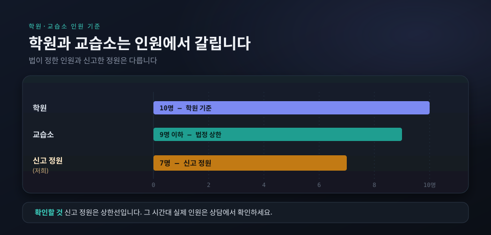
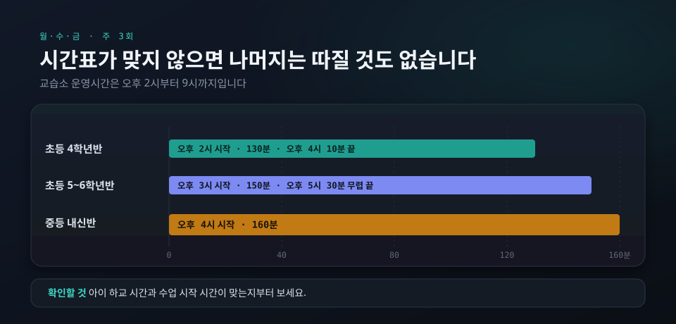
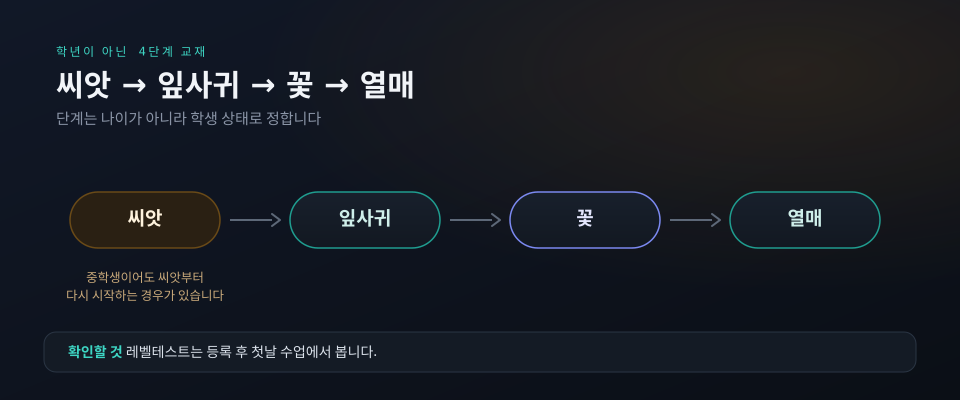

학원과 교습소는 인원에서 갈립니다
법으로 보면 교습소는 교습자 1명이 한 장소에서 1과목만 가르치고, 같은 시간에 교습받는 인원이 9명 이하여야 합니다. 학원을 가르는 기준 수는 같은 시간 10명입니다. 9명은 법이 정한 위쪽 한도이고, 저희가 교육청에 신고한 반 정원은 7명입니다. 조문과 등록 사항은 교습소와 학원의 차이에 정리해 두었습니다.
다만 신고 정원은 상한선일 뿐입니다. 아이가 들어갈 시간대에 지금 몇 명이 듣는지, 다른 학년과 섞이는지를 같이 물어봐 주세요. 그 시간대의 실제 구성이 아이 수업을 정합니다. 실제 인원은 반 배정과 함께 상담 때 알려 드립니다.

시간표가 맞지 않으면 나머지는 따질 것도 없습니다
지금 운영하는 반은 초등 4학년반과 초등 5~6학년반, 중등 내신반이고 모두 월·수·금 주 3회입니다. 초등 4학년은 오후 2시(130분), 초등 5~6학년은 오후 3시(150분)에 시작합니다. 중등부는 오후 4시(160분)에 시작합니다. 수업 시간으로 셈하면 4학년반은 오후 4시 10분, 5~6학년반은 오후 5시 30분 무렵 끝납니다. 교습소 운영시간은 오후 2시부터 9시까지입니다.
월 교습비는 초등 4학년반 310,000원, 초등 5~6학년반 350,000원, 중등 내신반 410,000원입니다. 고등 내신반은 학년과 과정에 따라 따로 편성하고, 수강료는 상담 때 안내드립니다. 교재비는 교습비와 별도입니다. 다른 곳과 비용을 비교하실 때는 월 금액만 맞대지 말고 주 몇 회, 회당 몇 분인지까지 같이 놓고 보셔야 합니다. 반별 표와 환불 기준은 수강료·시간 안내에, 초등 비용은 초등 영어 비용 안내에 있습니다.
수업 방식은 질문 하나로 드러납니다
어느 곳에 가셔도 "다음 단계로 넘어가는 기준이 있나요"라고 물어보세요. 기준이 있다는 답을 들으셨다면, 못 넘었을 때 무엇을 하는지까지 이어서 물어보셔야 합니다. 진도표만 있고 넘어가는 기준이 없으면 모르는 부분이 쌓인 채 다음 단원으로 갑니다.

저희 답은 이렇습니다. 배운 내용을 그 자리에서 확인하고, 기준을 넘지 못하면 다음으로 넘어가지 않습니다. 교재는 학년이 아니라 씨앗·잎사귀·꽃·열매 4단계로 올라가고, 단계는 나이가 아니라 학생 상태로 정합니다. 중학생이어도 씨앗부터 다시 시작하는 경우가 있습니다. 레벨테스트는 상담 전이 아니라 등록 후 첫날 수업에서 봅니다. 물어볼 것은 상담 때 무엇을 물어봐야 하나요에 모아 두었습니다.
이런 경우엔 안 맞습니다
영어 말고 다른 과목까지 한 곳에서 해결하려는 경우입니다. 교습소는 법으로 1과목만 가르칩니다. 주 1~2회만 다니려는 경우도 맞지 않습니다. 초등 3학년 이하 반은 지금 없습니다. 중학생이 시험 기간에만 내신 대비를 받으려는 경우도 받지 않습니다. 중등부는 정규 과정으로만 운영합니다. 이유는 시험 기간에만 다닐 수 있나요에 적었습니다.
진도를 빨리 빼 주기를 바라는 경우, 그냥 앉아만 있다 가는 곳을 찾는 경우도 어렵습니다. 저희는 면학 분위기를 엄격하게 지키고, 분위기를 흐리는 행동이 반복되면 함께 가기 어렵습니다. 과제와 확인 과정을 따라오지 않으면 학생 본인이 힘들어집니다.
마지막으로 보실 것은 아이의 반응입니다. 상담에 학생과 함께 오시면, 교실을 한 번 보고 나온 아이의 표정에서 견딜 만한 곳인지가 대체로 드러납니다. 쓰던 교재와 공부한 것을 챙겨 오시면 상태를 읽는 속도도 빨라집니다. 교실을 직접 보는 것과 쓰던 교재를 들고 가는 것, 어느 곳을 고르시든 그렇게 정하시는 편이 낫습니다.